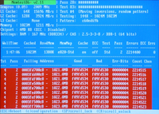

memtest
Dieser Artikel wurde für die folgenden Ubuntu-Versionen getestet:
Dieser Artikel ist größtenteils für alle Ubuntu-Versionen gültig.
Zum Verständnis dieses Artikels sind folgende Seiten hilfreich:
memtest86+  ist ein Programm zur Überprüfung des RAM-Speichers. Das Programm entstand aus einer Abspaltung des memtest-Projekts , welches eine Zeit lang nicht mehr aktualisiert wurde. Beide Programme stehen unter der GPL und unterstützen alle aktuellen Chipsätze und AMD- bzw Intel-Prozessortypen.
ist ein Programm zur Überprüfung des RAM-Speichers. Das Programm entstand aus einer Abspaltung des memtest-Projekts , welches eine Zeit lang nicht mehr aktualisiert wurde. Beide Programme stehen unter der GPL und unterstützen alle aktuellen Chipsätze und AMD- bzw Intel-Prozessortypen.
Experten-Info:
Hat der Rechner, dessen RAM-Bausteine getestet werden soll ein EFI Bootmanagement, so muss man das externe Tool des memtest-Projekts einsetzen. Die Ubuntu internen Tools memtest86+ werden auf UEFI-Rechnern automatisch deaktiviert! Siehe dazu die Hinweise unten.
Installation¶
memtest86+ ist bei jeder Ubuntuinstallation dabei und wird im GRUB 2-Menü automatisch eingetragen.
Darüber hinaus bieten beide Projekte auch eine bootbare CD oder USB-Version an.
Wann sollte man den Speicher überprüfen?¶
Bei folgenden Szenarien kann der Speichertest sinnvoll sein:
Bei RAM-Erweiterung, insbesondere wenn kein Markenspeicher gekauft wurde
Nicht reproduzierbare Abstürze verschiedenster Programme
 |
| Der Eintrag „Memorytest“ startet memtest86+ |
memtest starten¶
Über das GRUB-Menü startet man den Memorytest über den entsprechenden Eintrag. Dabei wird nur ein minimales Betriebssystem geladen und man kann während des Tests nicht produktiv am System arbeiten. Der Eintrag „... (serial console 115200)“ dient zur Überprüfung des Speichers auf einem anderen Rechner.
Hinweis:
memtest86+ führt eine Reihe von Tests aus und sollte deshalb eine Zeitlang (mehrere Stunden) laufen. Am besten lässt man das Programm über Nacht laufen, um sicher zugehen, das alle Tests durchgeführt und jedes Speicherelement auf Fehler geprüft wurde.
Wird das GRUB 2-Menü beim Hochfahren des Rechners nicht angezeigt, sollte man direkt nach den BIOS-Meldungen die ⇧ - oder Esc -Taste drücken.
Was tun bei Fehlern?¶
|  |
| Fehlerhafter RAM |
Sind mehrere Speicherriegel in der Hauptplatine (Motherboard/Mainborad) verbaut, kann man den Test auch auf einzelne dieser Riegel anwenden, um einen fehlerhaften Riegel zu identifizieren. Dazu baut man einen Riegel aus und startet memtest. Nach dem Test tauscht man den eingebauten Riegel mit dem vorher ausgebauten Riegel aus und startet memtest erneut.
Achtung!
Arbeiten im Inneren des Rechners erfolgen immer bei abgeschaltetem Netzteil, so dass noch Erdung vorhanden ist. Wer sich damit nicht auskennt, sollte dies einem Fachmann überlassen.
EFI Bootmanagement¶
Werden Anwendungen auf dem Rechner fehlerhaft ausgeführt, frieren diese Anwendungen ein oder zeigen sich andere nicht definierte Probleme, so sollte man die RAM-Bausteine im Rechner überprüfen (siehe oben).
Das ist aber auf einem UEFI-Rechner nicht so einfach möglich. Deshalb werden die relevanten Dateien
memtest86+.bin bzw. memtest86+-multiboot.bin
seitens GRUB 2 auf derartigen Rechnern automatisch deaktiviert (bzw. ignoriert), siehe folgenden Auszug aus der /etc/grub.d/20_memtest86+
1 2 3 4 | ## We need 16-bit boot, which isn't available on EFI. if [ -d /sys/firmware/efi ]; then exit 0 fi |
Man darf diesen Umstand aber nicht umgehen, sondern man sollte wie folgt vorgehen:
Mittels externem Werkzeug¶
Dazu kann man das Prüfprogramm memtest86 als ISO-Datei  herunterladen und brennen. Alternativ findet sich dort auch ein Image für USB-Sticks. Letzteres kann man mittels dd auf einen USB-Stick übertragen. (siehe README im Archiv) Dabei werden zwei Partitionen angelegt (x = lfd. Bezeichnung vom USB-Stick):
herunterladen und brennen. Alternativ findet sich dort auch ein Image für USB-Sticks. Letzteres kann man mittels dd auf einen USB-Stick übertragen. (siehe README im Archiv) Dabei werden zwei Partitionen angelegt (x = lfd. Bezeichnung vom USB-Stick):
/dev/sdx1 = legacy_boot
/dev/sdx2 = efi-system
Mit diesem USB-Stick kann man dann eine umfangreiche Überprüfung einleiten. Nach dem Start des Rechners muss man dann im EFI Menü den USB-Stick mit der UEFI-Kennung auswählen und starten. Hierbei sind Veränderungen im BIOS nicht erforderlich - das Werkzeug startet man im (U)EFI-Modus, eine Signatur für secure-boot ist integriert.
Das Ergebnis der erfassten Systemdaten wird im Verzeichnis/Datei
/EFI/BOOT/MemTest86.log
abgelegt. Dieses Verzeichnis befindet sich auf der zweiten Partition (EFI-Partition) vom USB-Stick und kann nur nach dem Einbinden des USB-Stick in einem Editor [2] ausgelesen werden. Dazu gibt man im Terminal [1] ein:
sudo blkid # Bezeichnung vom USB-Stick -> x herausfinden sudo mount /dev/sdx2 /mnt cat /mnt/EFI/BOOT/MemTest86.log > MemTest86.log sudo rm -f /mnt/EFI/BOOT/MemTest86.log # Bereinigung der Daten sudo umount /mnt
Hinweis:
Das ausführliche Testergebnis kann man sich nur in der "Pro-Version" (kostenpflichtig) ausgeben lassen.
Das Löschen der Datei MemTest86.log ist optional, um eine bessere Zuordnung zum Test zu erhalten und ein Überlaufen der Partition zu vermeiden (additive Aufzeichnung)
Mittels Windows¶
Hat man auf seinem Ubuntu-Rechner noch ein Dualboot mit Windows, so kann man dieses Betriebssystem dazu nutzen, einen Test des Arbeitsspeichers durchzuführen.
Dazu kann man am Windows-Desktop eine Suche einleiten:
Windows -Taste drücken
das Suchensymbol mit der
 -Taste anklicken
-Taste anklickenArbeitsspeicherin die Suchzeile eingeben"Arbeitsspeicherprobleme des Computers diagnostizieren" mit der
-Taste auswählen
Im darauf folgenden Fenster kann man dann eine der beiden Optionen
"sofort" oder "beim nächsten Start"
zum Einleiten der Überprüfung auswählen.
Hinweis:
Ist das Windows für den Bootvorgang nicht an der ersten Stelle, so muss man während das System rebootet, das Windows
im GRUB 2-Menü
im EFI-Menü
gezielt auswählen. Veränderungen an den BIOS-Einstellungen sind nicht erforderlich - dieses Werkzeug startet im EFI-Modus und (auch) unter secure-boot!
- Erstellt mit Inyoka
-
 2004 – 2017 ubuntuusers.de • Einige Rechte vorbehalten
2004 – 2017 ubuntuusers.de • Einige Rechte vorbehalten
Lizenz • Kontakt • Datenschutz • Impressum • Serverstatus -
Serverhousing gespendet von